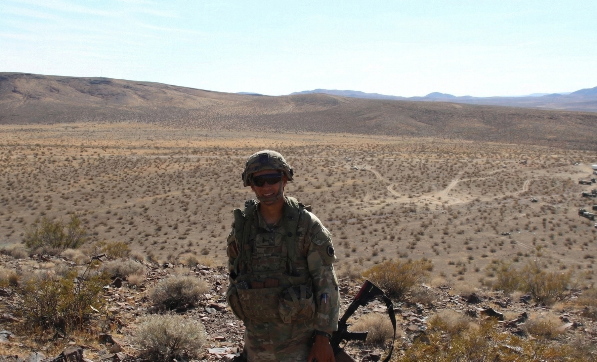
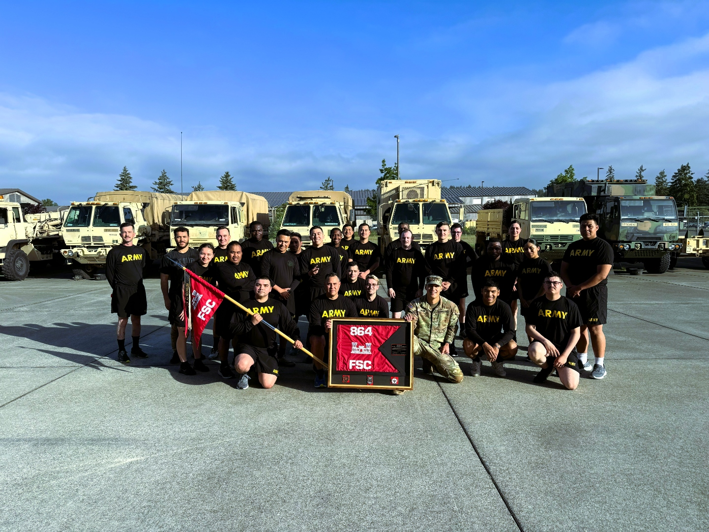

Lee Ambrose Park
Active Duty Army | M.P.S. Georgetown University
United States
About
Born and raised in California. Worked full-time in restaurants while in undergrad, with the main intent of commissioning into the U.S. Army. Served 4 years active duty in a variety of locations and units. Completing a Master's in Supply Chain Management at Georgetown University with a 4.0 GPA. Georgetown University Tropaia Award Recipient.
Experience
U.S. Army
Full-time
Sustainment — America's First Corps (I Corps)
13th Combat Sustainment Support Battalion · Dec 2024 – Present
SPO-Ammunition and SPO-Transportation billet at the 13th Combat Sustainment Support Battalion. After working in a Forward Support Company for a couple years, I transitioned to staff work and started building things I love, using Palantir Vantage and the Microsoft Power Platform. Self-taught through PySpark, DAX, and python transforms, building tools for the Army that reminded me of the projects I worked on with my older brother as a kid. Deployed dashboards for my leadership.

Forward Support Company Executive Officer
Mar 2024 – Dec 2024 · 10 mos
Oversaw all company operations, maintenance readiness, and personnel actions for 90+ soldiers across quartermaster, transportation, and supply sections.
Forward Support Company Maintenance Platoon Leader
May 2022 – Mar 2024 · 1 yr 11 mos
Led the maintenance platoon responsible for wheeled and tracked vehicle sustainment. This was the operational, hands-on leadership role — managing maintenance bays, dispatch operations, and field recovery missions supporting CENTCOM and INDOPACOM deployments.

Cadet
United States Army Cadet Command
Full-ride Army ROTC scholarship. UCSB Surfrider Battalion. Commissioned as a Quartermaster officer.
Projects
ARC — Ammunition & Range Coordinator
Microsoft Power BI → Rebuilt as Interactive Web App
Interactive ammunition calculator for Joint Base Lewis-McChord. Select a weapon system and enter soldier count to compute STRAC-based ammo requirements across Tables IV–VI (zero, practice, qualification). Automatically resolves DODICs, compatible JBLM ranges, and SDZ requirements. Finalist (35/100) in the Department of the Army's Power BI Showcase (January 2026).
CAL-C — Container Asset Logistics Calculator
Microsoft Power BI → Rebuilt as Interactive Web App
Predictive logistics modeling tool that determines if a container movement mission is mathematically feasible. Input cargo demands (TRICONs, QUADCONs, BICONs, MILVANs), transportation assets, and mission timeframe to compute total TEUs, required sorties, daily throughput, and a GO/NO-GO feasibility assessment with slack analysis.
CULT — Common User Land Transportation
Palantir Foundry / Vantage
Built from scratch on Palantir Foundry with an 8-stage data pipeline. Ingests GCSS-Army and IPPS-A data through PySpark transforms, creates an ontology with Soldier, Equipment, Unit, and SoldierEquipmentQualification objects, and powers a React/TypeScript dashboard. Includes the LEE AIP Bot — a custom AI assistant for querying unit readiness data in natural language. Started August 2025.
# Transform 1: Join soldier records with equipment hand receipts
# Produces one row per soldier-equipment pairing for readiness tracking
@transform_df(
Output("/SPO-T/datasets/cult/soldier_equipment_joined"),
soldiers=Input("/SPO-T/datasets/cult/soldiers_cleaned"),
equipment=Input("/SPO-T/datasets/cult/equipment_status"),
)
def compute(soldiers, equipment):
return soldiers.join(
equipment,
soldiers.dodid == equipment.hand_receipt_holder,
"left"
).select(
"dodid", "rank", "last_name", "unit",
"equipment_lin", "equipment_nsn", "status", "location"
)# Transform 2: Clean and validate incoming GCSS-Army equipment data
# Standardizes LIN/NSN formats, flags missing serials, deduplicates
@transform_df(
Output("/SPO-T/datasets/cult/equipment_status"),
raw_equip=Input("/SPO-T/datasets/cult/gcss_equipment_raw"),
)
def compute(raw_equip):
from pyspark.sql import functions as F
cleaned = raw_equip.filter(
F.col("lin").isNotNull() & F.col("nsn").isNotNull()
).withColumn(
"lin", F.upper(F.trim(F.col("lin")))
).withColumn(
"nsn", F.regexp_replace(F.col("nsn"), "[^0-9]", "")
).withColumn(
"has_serial", F.col("serial_number").isNotNull()
)
# Deduplicate: keep latest record per LIN + serial
return cleaned.dropDuplicates(["lin", "serial_number"])# Transform 3: Aggregate readiness metrics per unit
# Window function ranks units by equipment fill rate
@transform_df(
Output("/SPO-T/datasets/cult/unit_readiness_rollup"),
joined=Input("/SPO-T/datasets/cult/soldier_equipment_joined"),
)
def compute(joined):
from pyspark.sql import functions as F
from pyspark.sql.window import Window
unit_stats = joined.groupBy("unit").agg(
F.count("dodid").alias("total_soldiers"),
F.countDistinct("equipment_lin").alias("unique_lins"),
F.avg(F.when(F.col("status") == "FMC", 1).otherwise(0))
.alias("fmc_rate"),
)
# Rank units by FMC (Fully Mission Capable) rate
w = Window.orderBy(F.desc("fmc_rate"))
return unit_stats.withColumn(
"readiness_rank", F.rank().over(w)
)Education
Georgetown University
Master's Degree (M.P.S.), Supply Chain Management
Grade: 4.0
Westmont College
Bachelor of Science (B.S.), Political Science